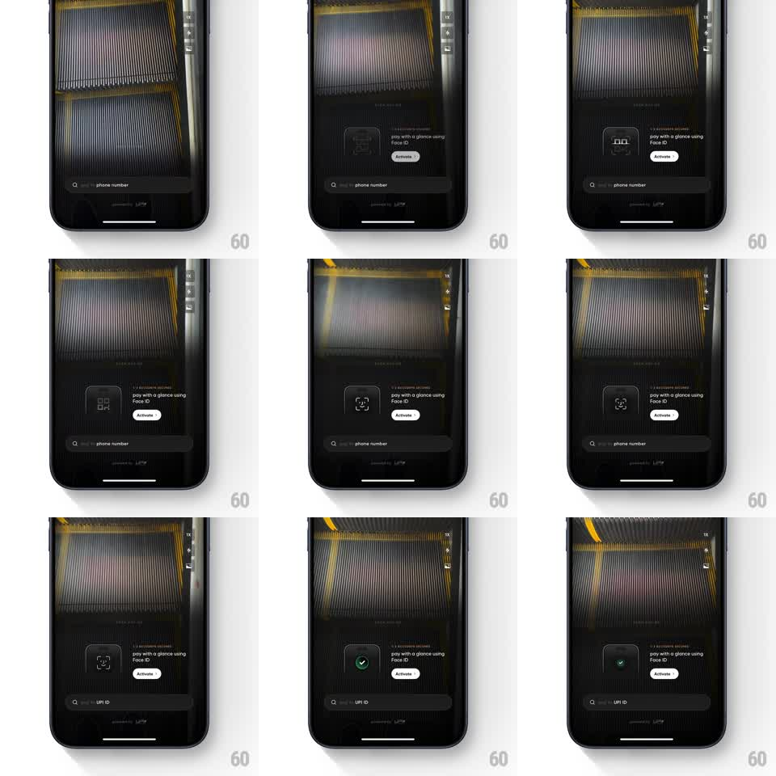

Media
Frame-by-frame

Rebuild this animation 1:1: CRED's Face ID activation - golden light rays sweep across the dark scanner backdrop while the Face ID glyph loops its scan brackets, then resolves to a green check inside the activation card.

Rebuild this animation 1:1: CRED's Face ID activation - golden light rays sweep across the dark scanner backdrop while the Face ID glyph loops its scan brackets, then resolves to a green check inside the activation card. ## Integration Integration: stack-agnostic spec - springs given as stiffness/damping, timed motions as duration + curve; map every value to your framework and animation library of choice. ## Scene CRED scan-pay screen, near-black: fine vertical line texture with diagonal golden light bands drifting across the top half; a dark rounded card holds the Face ID glyph, "pay with a glance using Face ID", and a white "Activate" pill; a search field sits at the bottom. ## Motion spec Pattern: ambient light-ray shimmer behind a glyph scan loop that resolves to a check. - Golden light bands sweep diagonally across the upper texture continuously (one pass ~3.5s, linear, slight intensity falloff), like light leaking through blinds. - The Face ID glyph animates: corner brackets draw in around the face (400ms), a scan line sweeps down the face (600ms), pause, repeat. - On activation, the brackets contract to the glyph's center (250ms, ease-in), the glyph flips to a green check in a ring (scale 0.6 -> 1, spring ~400/14), and the card's border picks up a faint green tint. - The search field's placeholder swaps from "phone number" to "UPI ID" with a 200ms vertical roll. ## Calibration - The light is warm gold on near-black, never white - it should feel like scanning a laser, not a flash. - Rays stay behind the card; nothing in the card is lit by them. ## Reduced motion Rays hold static at low intensity; glyph swaps bracket scan for a single draw-in; check fades in. ## Don't miss - The scan line inside the glyph runs at a different rhythm than the background rays - two independent loops. - The check ring is thin and green, not filled.